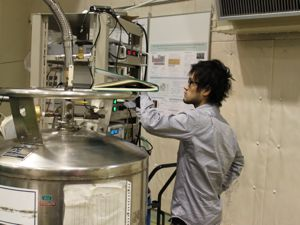

羽渕 隆文

| 研究テーマ | |
|---|---|
| 出身 | 兵庫県 |
| 修士論文題目 | |
| 卒業論文題目 | |
| 原著論文 | |
| 国際学会 |
1. 学会名：15th Hiroshima International Symposium on Synchrotron Radiation 題目：High-resolution photoemission spectroscopy of one-dimensional Pt complex [Pt2(MeCS2)4]2ClO4 Poster session 場所：Higashi-Hiroshima, Japan (2011.3) 2. 学会名：37th International Conference on Vacuum UltraViolet and X-ray Physics 題目：High-resolution photoemission spectroscopy of one-dimensional Pt complex [Pt2(MeCS2)4]2ClO4 Poster session 場所：University of British Columbia Vancouver, Canada (2010.7) 3. 学会名：14th Hiroshima International Symposium on Synchrotron Radiation 題目：High-resolution photoemission spectroscopy of one-dimensional Pt complex [Pt2(MeCS2)4]2ClO4 Poster session 場所：Higashi-Hiroshima, Japan (2010.3) |
| 国内学会 |
1. 学会名：第25回 日本放射光学会年会・放射光科学合同シンポジウム 題目：Ce 単結晶薄膜の高分解能角度分解光電子分光 場所：鳥栖市民文化会館・中央公民館 (2012.1) 口頭発表 2. 学会名：第24回 日本放射光学会年会・放射光科学合同シンポジウム 題目：一次元 Pt 錯体の高分解能光電子分光 場所：つくば国際会議場 (2011.1) 口頭発表 3. 学会名：日本物理学会 2010年・年次大会 題目：一次元 Pt 錯体の高分解能光電子分光 場所：大阪府立大学 (2010.9) 口頭発表 |
|
個人ページ |
→ Enter |